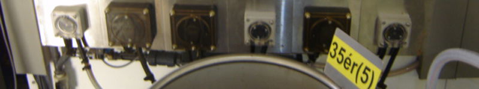
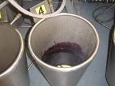

| | Nederlands | English | Deutsch | | ||||||||||||||
|  | ||||||||||||||
|
||||||||||||||
Doseersysteem De ververij beschikt over een moderne doseerunit zodat tijdens het verfproces en/of het wasproces alle kleurstoffen en hulpmiddelen op het juiste tijdstip en met de gewenste hoeveelheden worden gedoseerd. De doseerunit is dan ook een onmisbare en zeer belangrijke schakel in het proces van de ververij; op die manier kan bij grote partijen de kans op kleurverschil tot een minimum worden beperkt.
|
 |
|||||||||||||